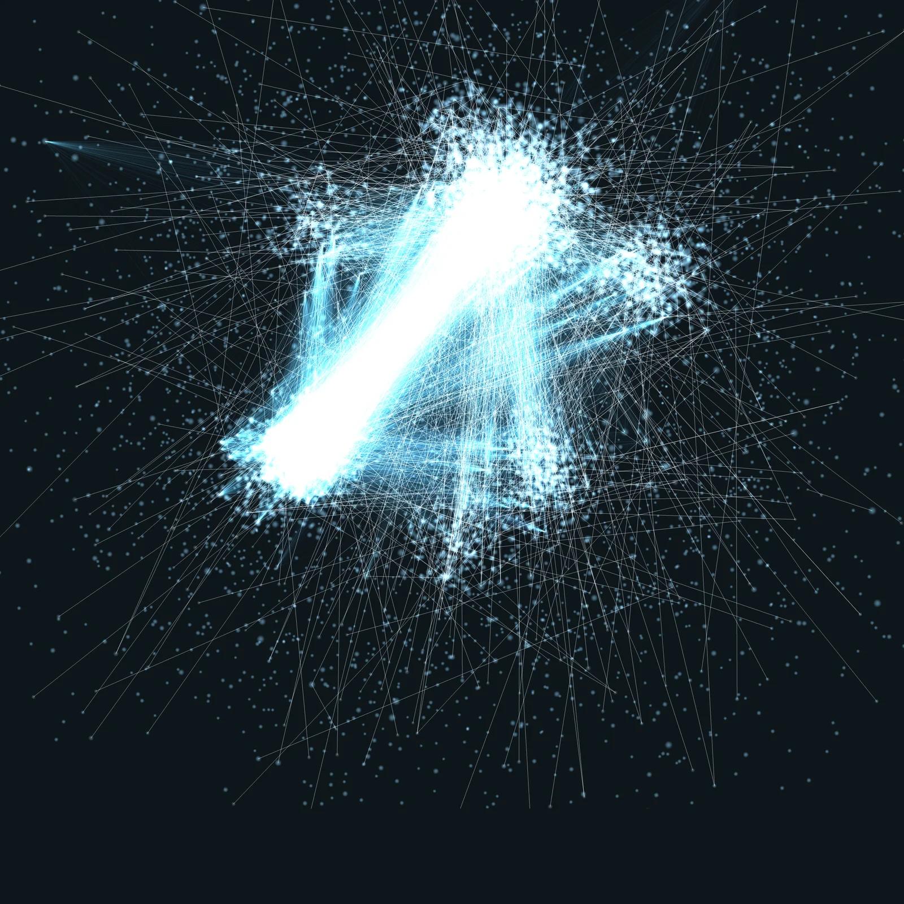

"Kein Mensch kann alles lesen, was über Haut geschrieben wurde."

Annas Problem
Anna hat ein volles Regal und das Gefühl, dass es nicht ganz ist.
Toner von A, Serum von B, Creme von C. Keine dieser Formeln wurde für die anderen gemacht. Jede Marke verkauft ihren Wirkstoff für sich, und niemand sieht das ganze Bild.
Das liegt nicht an Anna. Es liegt an der Menge: Kein Mensch kann alles lesen, was über Haut geschrieben wurde. Deshalb gibt es THE MIND.
Doppelt
Feuchtigkeit dreifach im Regal, weil jede Marke sie für sich verkauft.
Fehlt
Anti-Aging zu wenig, Longevity gar nicht. Was dazwischen fehlt, merkt keine Marke.
Verträgt sich nicht
Ob zwei Formeln zusammenarbeiten, weiß beim Mischen niemand.
Deshalb gibt es THE MIND, die KI von IB-7. Sie hat ausgewertet, was kein Formulierer je lesen könnte.

Was THE MIND tut
- 001Lesen
- 002Verknüpfen
- 003Durchrechnen
- 004Aussortieren
THE MIND liest, verknüpft und rechnet. Aussortiert wird alles, was nicht ins Ritual gehört.
So entsteht IB-7Vom Wissen zu deinem Ritual.
Über 170.000 Quellen aus 4.000 Jahren Heilwissen und moderner Forschung. Jeder Punkt ist eine Quelle.
THE MIND sortiert alles nach den Aufgaben der Haut: Feuchtigkeit, Anti-Aging, Longevity, Barriere und Schutz.
Über 2,5 Millionen Kombinationen werden durchgerechnet. Was sich nicht verträgt, wird blass.
Übrig bleiben 7 + 7 Wirkstoffe in zwei Formeln. Irritationspotenzial 0,00, von einer Dermatologin freigegeben.
"Optimum statt Maximum. Nicht die höchste Dosis ist das Ziel, sondern die wirksamste."
Haltung IB-7Woher das Wissen kommt.
Aus drei Bereichen: moderne Wissenschaft, altes Heilwissen (TCM, Ayurveda, Antike und Europa) und chemische Datenbanken. Jede Aussage soll sich bis zur Primärquelle zurückverfolgen lassen.
Vom Papyrus bis zum Laborergebnis.
Wir lesen überliefertes Beauty- und Heilwissen aus vielen Traditionen, etwa den Papyrus Ebers, dazu botanische Quellen, Patente, Studien und aktuelle Forschung. Nicht eine Tradition und nicht den Trend des Jahres, sondern alles, was digital verfügbar und für die Entwicklung nutzbar ist. Eigene Vorlieben halten wir zurück. Nach unserem Anspruch ist das der größte systematisch analysierte Wissensfundus der Beauty-Geschichte.
Technologie als Werkzeug, kein Selbstzweck.
Sie hilft, sehr große Informationsmengen zu ordnen, mögliche Zusammenhänge zu prüfen und Entscheidungen nachvollziehbar zu machen. Sie findet Kombinationen, auf die kein Mensch käme, nicht weil Menschen nicht klug wären, sondern weil es zu viele Möglichkeiten sind.
Geprüft von Menschen.
THE MIND wertet aus und rechnet. Der Patch-Test (25 Proband:innen, 72 Stunden, Irritationspotenzial 0,00) wurde von einer Dermatologin freigegeben.
Nur mit Beleg.
Die vollständige Quellenliste folgt PLATZHALTER. Bis dahin zeigen wir nur Kategorien und bekannte Beispiele, ohne Zahl und ohne erfundene Studie.
- Traditionelle Chinesische MedizinShen Nong Ben Cao Jing, Quelle zu Reishi[Beleg prüfen]
- AyurvedaSushruta Samhita, Quelle zu Centella[Beleg prüfen]
- Antike und EuropaDe Materia Medica, Arzneimittellehre[Beleg prüfen]
- Moderne ForschungFachjournale der Dermatologie und Kosmetikwissenschaft[PLATZHALTER]
- Chemische ValidierungDatenbanken zu Inhaltsstoffen, z. B. EU CosIng, CIR, PubChem[Beleg prüfen]
Ist THE MIND nicht nur ein Buzzword?
THE MIND ist die Methode, nicht das Produkt. Sie erklärt, warum aus "viel" ein Optimum wurde. Was du kaufst, sind zwei geprüfte Formeln mit Irritationspotenzial 0,00.
Ersetzt die KI Fachleute?
Nein. Die KI wertet aus und rechnet. Geprüft wird von Menschen: Der Patch-Test wurde von einer Dermatologin freigegeben.
Wer prüft, was THE MIND ausgibt?
Jede Formel durchläuft einen Verträglichkeitstest (25 Proband:innen, 72 Stunden), einen Stabilitätstest über 3 Monate und einen Konservierungsbelastungstest (Kriterium A). Die Belege findest du auf der Seite "Geprüft".
Woher stammen die Quellen?
Aus drei Bereichen: moderne Wissenschaft, altes Heilwissen und chemische Datenbanken. Die Quellenliste mit Belegen folgt PLATZHALTER.
¹ Rechenbasis: 50 ml, 2 Pumpstöße täglich, 168 Anwendungen, ca. 12 Wochen. 30 Tage geöffnet testen, Versand frei.